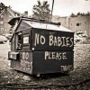

1. Există riscul dovedit ca în primele luni de sarcină vreun doctor care şi-a luat Bac-ul „decât în toamnă” să-ţi confunde fătul cu pietrele la rinichi, că doar amândouă dau dureri, iar în final vei ajunge să naşti la toaletă, unde doctorul te trimite cu speranţa că vei elimina calculii renali.
2. Dacă obstetricianul nu va fi mulţumit de grosimea plicului îndesat în buzunarul halatului ca la coafeze, s-ar putea ca, la naştere, să bage copilul în mă-sa. La propriu, precum se procedează la Maternitatea Piteşti.
3. Au noroc nou-născuţii care supravieţuiesc primelor zile de viaţă fără să fie scăpaţi în cap, spălaţi pe ochi cu dezinfectant de toalete sau pârliţi la incubator de vreo asistentă ieşită să fumeze o ţigară lungă, după modelul de la Maternitatea Giuleşti.
4. Dacă spitalul nu ţi-a nenorocit urmaşul, atunci se ocupă popa la botez. Mulţi preoţi ortodocşi plini de zel refuză să creadă că un bebeluş nu are neapărat vocaţie de scafandru şi nu prea poate respira sub apă, fie ea chiar sfinţită.
5. Când vine vremea să-ţi înscrii copilul la grădiniţă, ar fi bine să deschizi toate uşile cu piciorul (pentru că braţele îţi sunt prea încărcate cu „mici atenţii”). Dacă ai reuşit să plasezi şpaga şi să obţii un loc, roagă-te să prindă o sală aflată la parter.
6. La începutul fiecărui semestru de şcoală al celui mic, va trebui să scurmi în portofel după fondul clasei, fondul şcolii, fondul de protocol, culegerea obligatorie „a lu’ domnu’ profesor” şi indispensabilele cărţi de exerciţii semnate de doamna inspectoare.
7. Toată viaţa vei încerca să-i explici copilului tău că Daniela Crudu, ţăranu’ cu Masserati şi Leo de la Strehaia nu sunt tocmai cele mai nimerite modele în viaţă. Zi de zi îl vei minţi explicându-i că doctoranzii căpşunari şi academicienii cu izmenele rupte în posterior sunt doar nişte excepţii, că munca cinstită e răsplătită sau că bunul simţ e o virtute. Piciul o să se uite în gura ta până în prima zi când va pune mâna singur pe o telecomandă sau va intra pe Internet. Moment în care te va întreba de ce l-ai minţit atâta vreme.


{kind=link}
{kind=link}
“Ridendo castigat mores” – nu stiu daca veti “infrana” ceva, dar umor aveti, chiar de calitate;
un sfat de un crestin: nu va mai luati de cele sfinte, ca oricum se pare ca nu aveti habar de nimic (taina botezului in speta) limitati-va la ce lumesti…
Mulţumim. În privinţa chestiunilor creştineşti, nu ne bazăm pe habar, ci pe exemple. Extrem de lumeşti, de altfel.
Extrem de lumeşti, de altfel.
din cate stiu eu, nou-nascutii isi pot tine instinctual respiratia sub apa. este un gest reflex. dar un copil se poate naste si bolnav. plus ca, e un reflex care se pierde o data cu cresterea. avand, deci, in vedere ca omul nu e o fiinta amfibie, ideea de a boteza un nou-nascut prin scufundarea lui in apa nu e o crestinatate, ci o cretinatate. dar exista solutii: poti boteza copilul doar turnandu-i o cescuta de apa in cap. iar daca popa se impotriveste, ii explici ca trecerea ta si a copilului tau la budism ar fi pentru el o afacere proasta pe termen lung:)
Nou-născuţii (şi nu numai) au şi instinctul de a respira accelerat atunci când sunt speriaţi sau dacă le este frig. Depinde care dintre instinctele native sunt mai puternice.
În cazul bebeluşilor din Mihăileni (Republica Moldova), respectiv Haşag (Sibiu), se pare că a prevalat nevoia de oxigenare în condiţii de stres.
sau poate erau bolnavi. cert e ca nu au putut respira sub apa. am spus-o si o sa o mai spun: daca nu se reformeaza, Biserica nu are nici o sansa sa mai existe si peste 100 de ani.
al optulea motiv e ca te va intreba inca de la gradinita de ce el/ea se joaca Nu te suprara, frate sau Mesterul Manole, in timp ce alti copii se joaca pe console Nintento si PlayStation…
Despre consola de joc “NINTENTO” n-o sa intrebe nimeni.
E totuşi copil, s-ar putea să întrebe Problema e: ce-i răspunzi după ce îl inveţi denumirea corectă?
Problema e: ce-i răspunzi după ce îl inveţi denumirea corectă?
La intrebarea asta raspunsul este relativ greu de gasit. Depinde din ce punct de vedere vrei sa raspunzi. Un posibil raspuns dpdv. educativ ar putea fi: “Nintendo, PlayStation, Wii, iti dezvolta simtul motoric, dexteritatea, atentia”.
Din punct de vedere economico-financiar: “puisor, mama nu are momentan bani pentru PlayStation sau Nintendo”
Orice raspuns ai da vor urma alte si alte intrebari, care de care mai greu de raspuns. De fapt in asta consta arta de a creste si a educa un copil.
Din păcate vremea artei romantice a cam trecut, iar un răspuns pragmatic ar fi dureros. Dar e o artă/meserie complicată, iar cei care n-o stăpânesc produc aşa ceva.
pe langa cele 7 motive de a nu face copii in Romania as mai adauga cateva motive de a nu face copii deloc:
1.Nasterea: imagineaza-ti ca trebuie sa impingi un grapefruit prin fund si ca te cam chinui 10 ore iar doctorii dau gres cand vine vorba sa iti faca un buzunar mare pe burta ca sa ti-l scoata. Sa nu credeti pe cele care spun ca durerea se uita in cateva luni. Minciuna!
2.Responsabilitate: Toate celelalte prioritati palesc in comparatie cu asta. Daca decizi sa faci un copil trebuie sa fii constient ca el este prioritatea numarul 1. Daca dai fail, va avea el grija mai tarziu sa iti aminteasca spundandu-ti “nu eu am cerut sa ma nasc”.
3.Scutecele: In ziua de azi scutecele de unica folosinta absob mult lichid si nu se scurge nimic. Insa tot trebuie sa schimbi sute de scutece. Deseori ele contin mai mult decat lichid, iar pe masura ce copilul creste mai mare, scutecele devin mai mirositoare si devin o sarcina mai grea. Sa nu mai vorbim de descotorosirea celor folosite si de banii aruncati la toaleta zi de zi.
4.Trezirile in mijlocul noptii: Ingrijirea unui copil necesita mult efort emotional si fizic, ingreunata de acei copiii care nu dorm decat maxim 90 de minute pe tura. Multi parinti cu copii mai mari, par cum ca au uitat cat de greu a fost in primele luni, si ca trebuiau sa poarte ochelari fumurii ca sa isi acopere cearcanele care si-au facut loc treptat pe obrajii lor. Parintii necesita un somn bun ca sa munceasca bine si de multe ori nu pot obtine asa ceva. De aici pornesc frustrarile, oboseala, certurile iar cuplul incepe sa se destrame chiar daca multi nu recunosc. Tatii incep sa se gandeasca “cine naiba m-a pus sa vreau copii!” iar mamele “sunt prea obosita sa mai imi permit luxul de a face sex cu sotul meu”. Deci aici intra si motivul urmator:
5. O povara in viata de cuplu: De multe ori barbatul devine gelos pentru ca nu i se mai acorda atentia pe care o primea inainte sa soseasca copilul si de multe ori incearca sa regaseasca aceasta atentie in alta parte si bineinteles aici intra in scena adulterul, chiar si din primele luni de la venirea copilului pe lume.
6. Sfaturile: Oameni complet straini se vor oferi sa va sfatuiasca despre cum sa va cresteti copilul. Deseori sfaturile sunt contradictorii si epuizant de eronate. Ei bine, pe straini ii putem ignora mult mai usor decat pe prieteni sau cei din familie care au crescut deja copii. Cateva sfaturi ti le-ai putea dori insa multe vor veni nesolicitate si cum nu se cuvin.
7.Relatiile alterate: Cand apare un copil relatiile cu cei din jur, si aici ma refer la absolut toti, se schimba. Copilul se afla in fruntea tuturor gandurile tale iar ceilalalti oameni fara copii nu se pot asocia noilor tale ganduri. De aceea multi isi schimba prietenii si vor socializa din ce in ce mai des cu oameni care au deja copii la randul lor. Multe legaturi puternice din trecut se vor destrama, cu unii prieteni nu te vei mai revedea. Singura relatie care se va imbunatati va fi cea cu copilul tau.
8.Timpul liber: Ce gluma buna! nu o sa ai deloc. Majoritatea timpului pe care il petreci inafara ingrijirii copilului va fi petrecut recuperand din timpul pierdut pentru a termina diverse proiecte peste care a trecut dead line-ul. Tu si cu partenerul trebuie sa planificati f bine timpul liber pe care il petreceti departe de copil.
9. Grijile: Parintii in permanenta isi fac griji pentru copiii lor, monitorizand cat de repede cresc, dorm, se tarasc, se plimba, citesc, isi fac prieteni samd. Iar un parinte tot ce poate sa faca este sa permita copilului sa actioneze in ritmul sau si ca urmare a personalitatii lui. Este foarte frustrant si ingrozitor cand copilul tau nu mananca bine sau nu poate sa citeasca la fe de bine ca alti copii de varsta lui ori are deficiente de vorbire sau nu se poate adapta social.
10. Banii: Copiii sunt costisitori in multe feluri. De multe ori unul din parinti renunta la salariu ca sa stea acasa cu copilul si sa ii poarte de grija. Copiii trebuie sa manance si sa fie imbracati iar de cele mai multe ori hrana si hainutele lor sunt speciale si mult mai scumpe decat ale adultilor. Au nevoie de ingrijiri medicale prin faptul ca trebuie dus cat e mic des la doctor sa verifice daca ia in greutate conform varstei, plus alte analize. Au nevoie de educatie, de activitati sportive si de hobby-uri. Asa ca a creste un copil in conditii normale nu este absolut deloc ieftin, ba chiar puteti sa va luati gandul de la acele concedii la care ati visat pe vremurile erati un cuplu singuratic.
11. Curatenia: Un copil inseamna mai multa energie necesara pentru a mentine curatenia si ordinea in casa. Copiii nu contribuie la acestea decat cand sunt mai maricei si chiar si atunci ei pot genera mai multa munca. Desigur casa va necesita mai multa curatenie decat de obicei, nu numai ptr ca al tau copil face mai multa mizerie insa gandeste-te ca vine varsta cand merge in patru labute prin casa si mai da si cu boticu pe jos si din cand in cand mai linge si podeaua. Se vor dubla rufele si vasele si doar tu ca femeie vei face asta vreme buna, cativa ani la rand.
12. Pierderea libertatii. Oamenii fara copii pot cu usurinta sa impacheteze si sa se mute oricand doresc. Acestia pot sa fie fara job-uri sau sa fie in schimbare de cariera. Pot oricand sa se desparta de parteneri si sa isi gaseasca altii. Copiii, chiar daca de obicei sunt flexibili, trebuiesc luati in calcul cand vine vorba de orice schimbare importanta din viata. Stabilitatea si rutina permite copilului sa exploreze viata de pe o pozitie avantajoasa, sigura si solida. Costul acestei stabilitati este chiar libertatea ta.
Si inca un motiv si cu asta ma opresc desi mai sunt multe altele de adaugat;
13. cifra 6 miliarde va spune ceva? Lumea este suprapopulata. Chiar trebuie sa mai contribui si tu la asta? Nu raspunde cu usurinta la aceasta intrebare! Fiecare suflet nou, suge din resursele noastre limitate, calca in picioare pamanturi care inainte nu au fost populate si multe alte specii de vietuitoare sunt alungate din habitatul lor sau chiar disparute ca specie pentru totdeauna doar ca sa construim noi spatii rezidentiale si mall-uri ca sa cream mai multe deseuri si sa acceleram instabilitate la nivel global.
Toate aceste randuri au fost inspirate de la cunostinte si prieteni, dupa ce i-am observat ani la rand, si am remarcat cum s-a schimbat viata lor de cand au aparut copiii la ei in familie.
@Chicka, mulţumim frumos pentru comentariul exhaustiv. Rar întâlneşti argumentaţii atât de elaborate.
Te invităm şi la dezbaterea altor teme abordate abordate de acru.ro, convinşi fiind că vei aduce plusvaloare argumentativă.
@Chicka, Dupa nume pari a fi femeie așa ca dacă am dreptate, doresc sa te felicit pentru modul in care ai expus mai sus conceptele tale legate de acest subiect. Uite ca mai sunt si femei destepte in tara asta de kkt care vad lucrurile mult diferit fata de aspirantele interminabile al statutului de “graviduta”.
Pentru mine din păcate este prea târziu deoarece mi-a trantit muierea mea deja 2 copii si chiar mă regăsesc in rândurile tale, iar cu aceasta ocazie doresc sa ma descarc aici despre tot ce îmi provoacă ulcer cerebral si emotional, fara sa imi stie nimeni adevarata identitate. Promit sa revin cu mai multe detalii deoarece acum nu îmi permite timpul, insa înainte, doresc de asemenea sa felicit echipa acru.ro pentru articolele pe care le transeaza cu dezinvoltura, umor si cinism.
@Repo, suntem bucuroşi că ne citeşti şi te aşteptăm, cu drag, să ne spui povestea ta.
Ştim că subiectul e tabú în societatea românească, iar mediul virtual nu face excepţie. Tocmai de aceea am vrut să prezentăm cealaltă faţetă a realităţii, despre care “nu se cade” să vorbeşti.
Va salut! Am citit cu placere cele scrise mai sus. Chicka are intr-o masura dreptate. Dar daca cei care pot nu doar sa faca ci sa si creasca copii in conditii decente, oferindu-le o educatie care sa-i ajute sa fie adulti echilibrati si multumiti de viata pe care si-au creat-o, daca acesti potentiali parinti ar renunta la idee si ar ramane cupluri de 2 persoane cu doar un anticonceptional in plus pe lista de cumparaturi, atunci…cum va arata tara asta dupa generatiile noastre?! Cum arata acum?!
Problema suprapopularii nu este aici, resursele noastre sunt destule, doar prost gestionate. Nu renuntati la bucuria (si durerea) de a avea copii. E parte dintr-o viata implinita. Responsabilitatea este intr-adevar imensa si permanenta, orice intamplare te doare sau te bucura mai mult daca e vorba de copilul tau. Dar ei cresc si odata cu ei cresti si tu, din nou…Incercati sa fiti cat mai pregatiti, dar nu pana la absurd.
Totusi, daca ati primit viata ca pe un dar, incercati sa nu-l dati mai departe ca pe o povara. Copiii merita sa aiba o copilarie fericita, dar adesea avem impresia ca pentru asta le trebuie mult prea multe, cand de fapt nu e chiar asa.
”Toti oamenii mari au fost candva copii, dar putini isi mai aduc aminte”, scria Exupery. Copilul vostru isi va aminti in primul rand de prezenta calda a parintilor si de jocurile jucate impreuna, de o plimbare pe malul unui lac, de un avion pe care l-ati construit din carton si lemn impreuna cu el. Viata e o calatorie la capatul careia s-ar putea sa iti dai seama, tardiv, ca fara copii ai mers ca intr-un tren cu ferestrele pe jumatate acoperite, fara sa vezi toata frumusetea locurilor prin care treceai o singura data…
Link
Comments on this entry are closed.